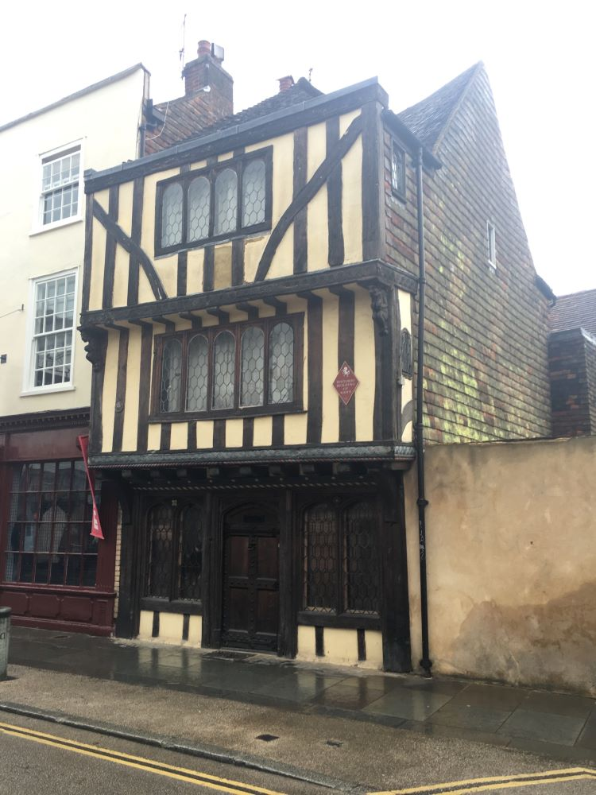
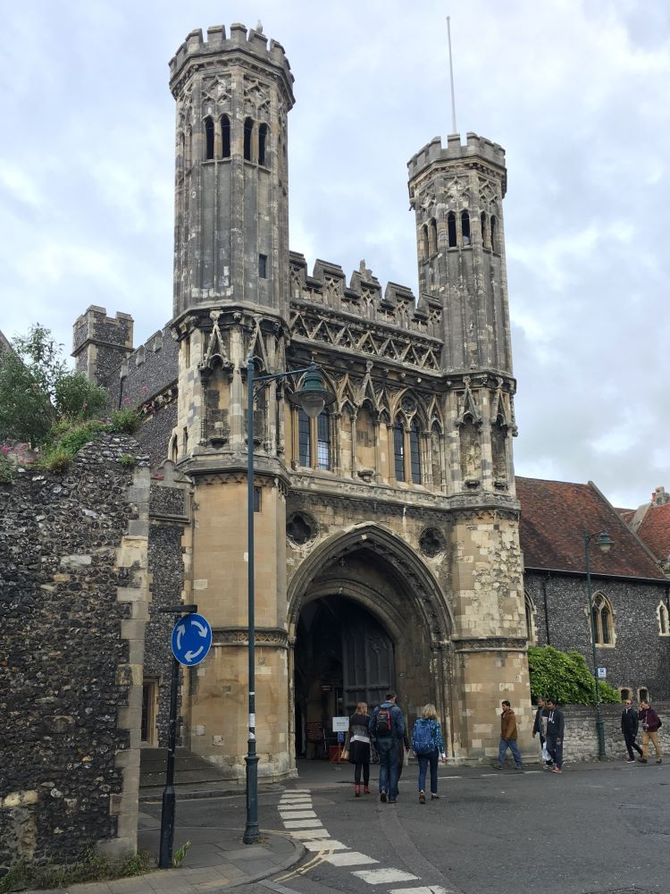
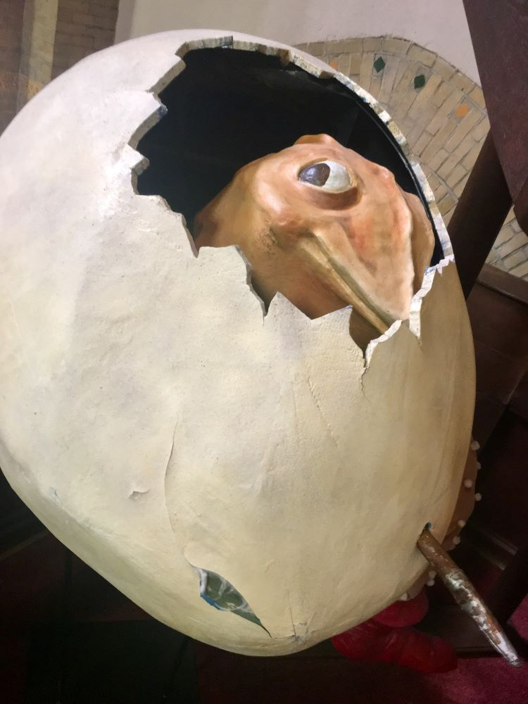
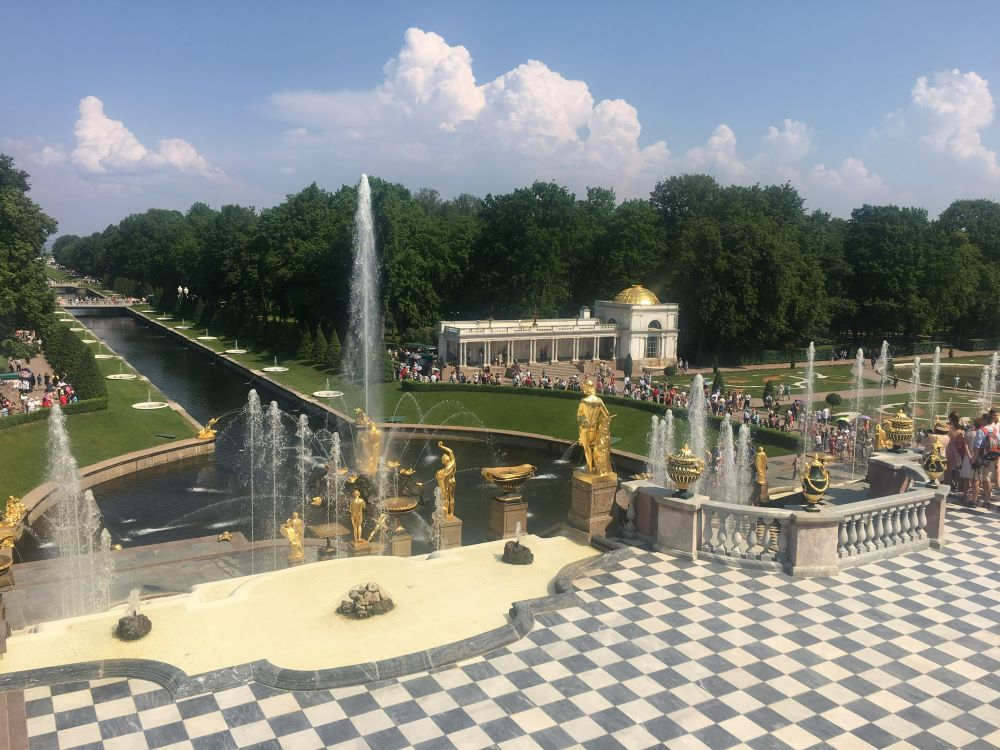
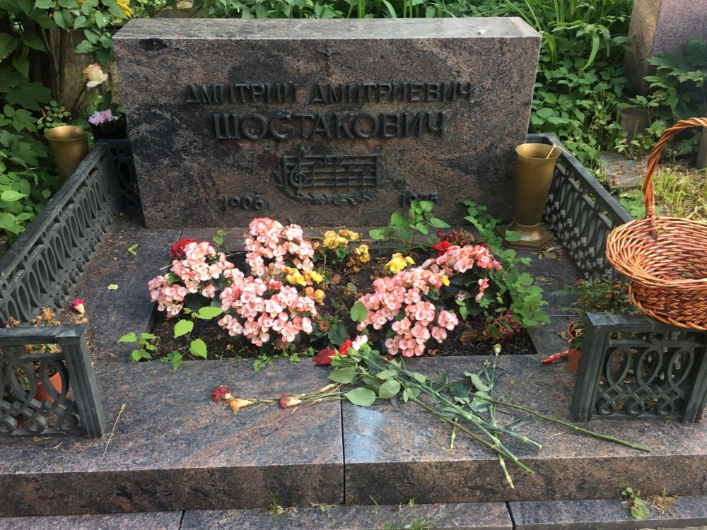
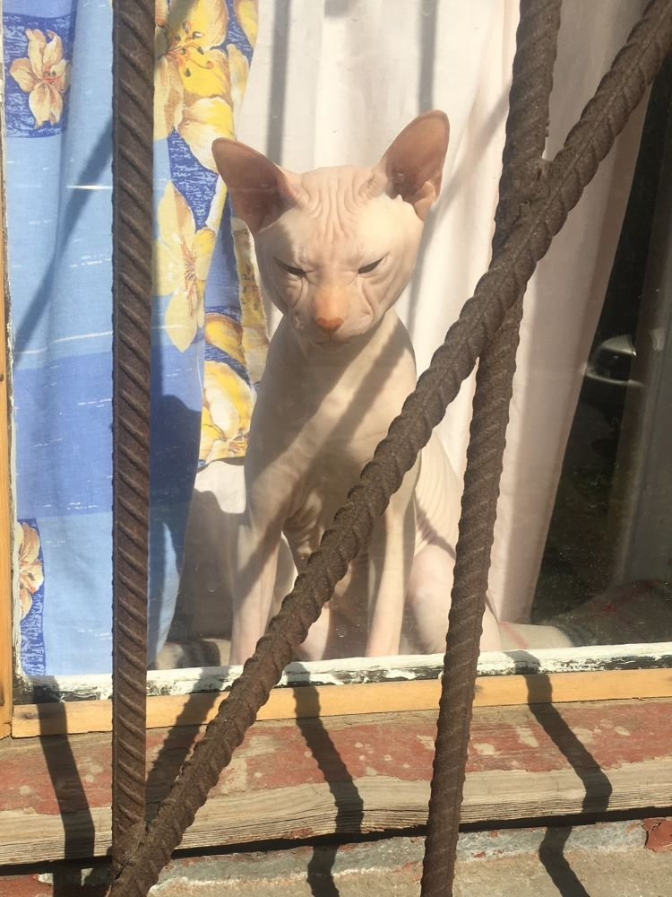
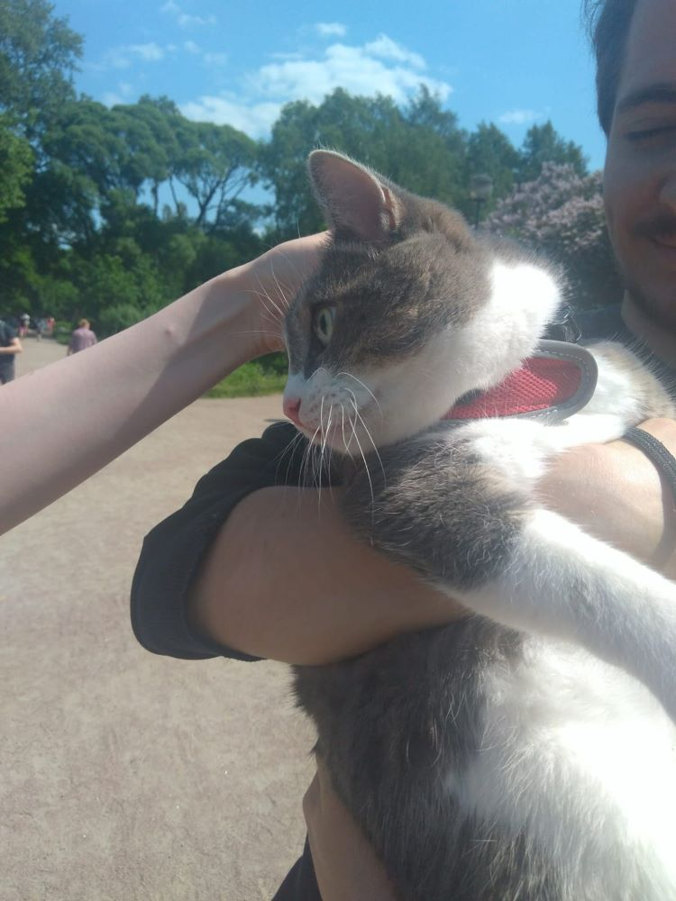
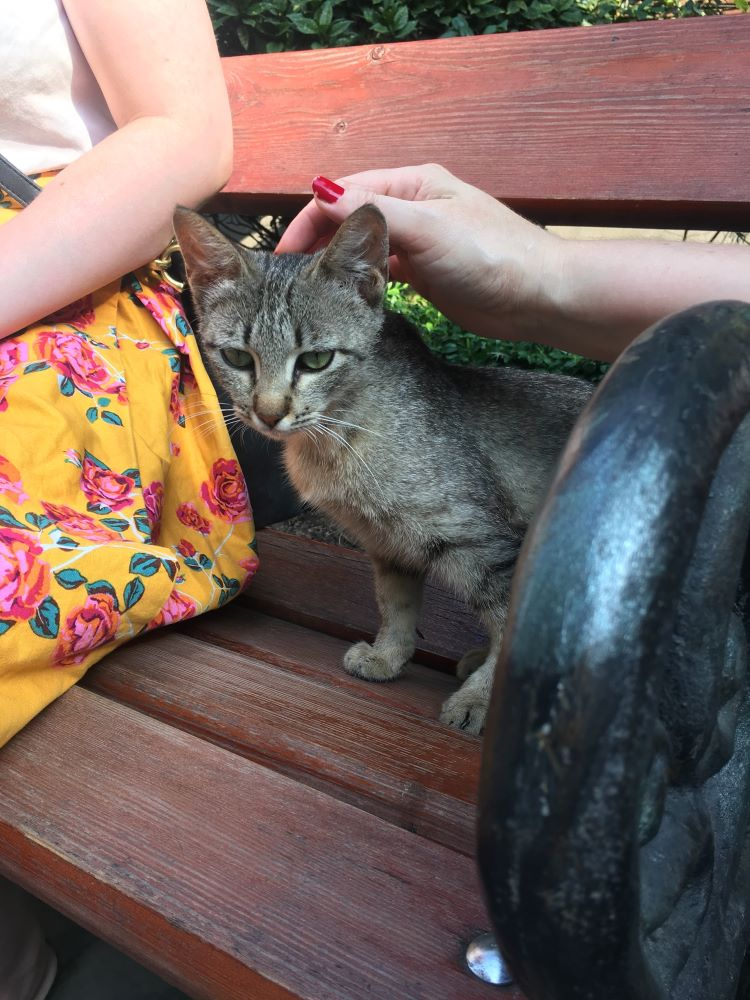

From around 2016 through 2019, I was able to fly most places very
cheaply due to my stepdad's airport job. I don't travel much now but
at some point I'd like to visit New Zealand.
St. Petersburg, Russia - February 2016
I went on this trip with my dad. I had been learning Russian for a
while and my dad found fairly inexepensive tickets. Neither of us
had ever left the country so it was pretty exciting/terrifying.
We were only there for about 5 days but still managed to do quite a
lot. We saw a performance at the Marrinsky Theatre and spent a total
of 12 hours, over a few days, just wandering the Hermitage Museum.
We also went to the Church of the Savior on Spilled Blood and a cat
cafe.
The General Staff BuildingThe Winter PalaceMary Magdelene and some hunksHallway in the HermitageChapel in the HermitageSt. Petersburg MosqueChurch of the Saviour on Spilled BloodInterior of the churchMore Church
Cat Cafe:
London and Canterbury, England - 2016
This was my first trip by myself. I flew into London and stayed the
night there in a hostel. I had terrible allergies when I first got
there so I just stayed in and drove everyone else in the hostel
crazy coughing and sneezing.
The Next day I felt better and went to the Victoria and Albert
Museum and British museum. There was a bunch of clothing I wanted to
see at the V&A but sadly part of their costume collection was not
available when I was there. After this I caught a train to
Canterbury where I spent the rest of the week.
In Canterbury I mostly just relaxed and walked around. I visited
Canterbury Cathedral and a bunch of other old churches and
cemeteries, as well as the ruins of Canterbury Castle. It was
raining for most of this trip, but that added to the comfiness.

Canterbury Castle

St. Augustine's AbbeyChrist Church GateCanterbury CathedralPretty cathedral window
St. Martin's Church cemetery
Haarlem and Den Bosch, The Netherlands and Ghent, Belgium - 2017
This was a family trip with my parents and stepdad. The first half I
spent in Haarlem, and then my dad and I took the train to Ghent. On
the way there, we stayed for a day in Den Bosch, Hieronymus Bosch's
birthplace. Den Bosch had a museum dedicated to Bosch, which had
some drawings I had never seen and some other cool artwork based on
Bosch. The town also had some statues of Bosch's creatures hidden
around. Ghent was absolutely stunning and full of Medieval
architecture.
Haarlem
St. Barbara GasthuisMüller Organ in the Great ChurchCat about to order lunch
Den Bosch

Bosch Sketch
Ghent
St Petersburg, Russia - 2019
After my first trip to Russia I decided to major in Russian Studies
at university. In 2019, I went back to St. Petersburg as part of a
study abroad program. We studied for three months at the Smolny
Convent while living with local families. I spent more time at the
Hermitage, visited Peterhof Palace and Catherine Palace, and saw
several musical and theatre performances. Several of us took a train
to Moscow for a weekend as well. This trip was where I met my
partner, who was also studying abroad.
On my way to St Peterburg I also had very short stops in London,
where I went to the house of commons and watched a debate for a few
hours, and Helsinki, where I had to rush from the airport to the
city to take a ferry to SPB and thus had no time to enjoy the city.
Smolny Cathedral and conventPeter and Paul CathedralCatherine PalaceCatharine Palace Hermitage
Peterhof Park

Moscow
St. Basil's CathedralEnterance to the VDNKhLenin statue in VDNKhCathedral of Christ the SaviourNovodevichye CemeteryGrave of Vladimir MayakovskyGrave of Alexandra Kollontai

Shostakovich's grave
Cats

Two kitties watching the traffic

Cat on a walk in the parkKitty at the mosqueGoth cemetery catMarcy, my host family's adorable cat
Tbilisi, Georgia and Istanbul, Turkey - 2019
On my way home from Russia, my parents met up with me for five days
in Tbilisi, Georgia, and then a couple days in Istanbul. Tbilisi was
unbelievably beautiful, full of history and cats. I ate a lot of
food on this trip. Georgian food is my favourite things in the
world. Istanbul was also beautiful and full of cats but we were only
there a short time. I'd love to go back and spend more time there
someday.
Tbilisi
Metekhi churchOrbeliani Baths
Cats and dogs

Istanbul
Hagia SophiaCat stealing a bike
Los Angeles, USA - 2022
My friend and I went to LA for a Xena: Warrior Princess convention.
I was never that interested in going to LA before, but it was really
beautiful and a lot of fun. I have pics of our cosplays for the
convention
here. For some reason the only other
pictures I took are of the cemetery, which was full of cats,
peacocks, and various other animals.

 Hellmouth
Hellmouth